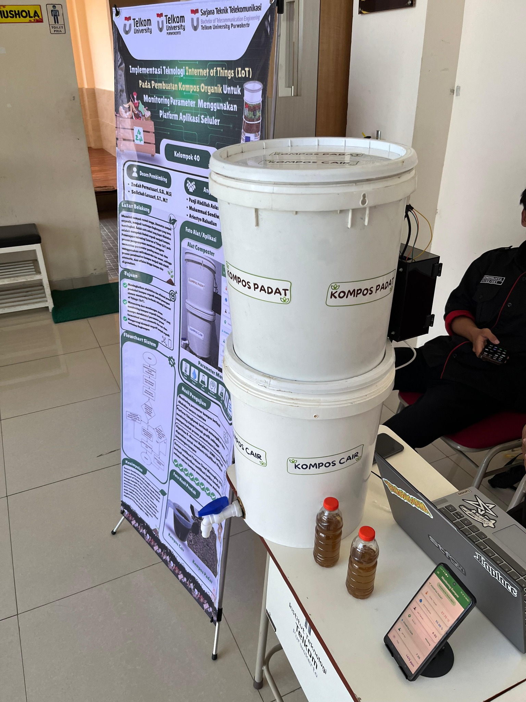
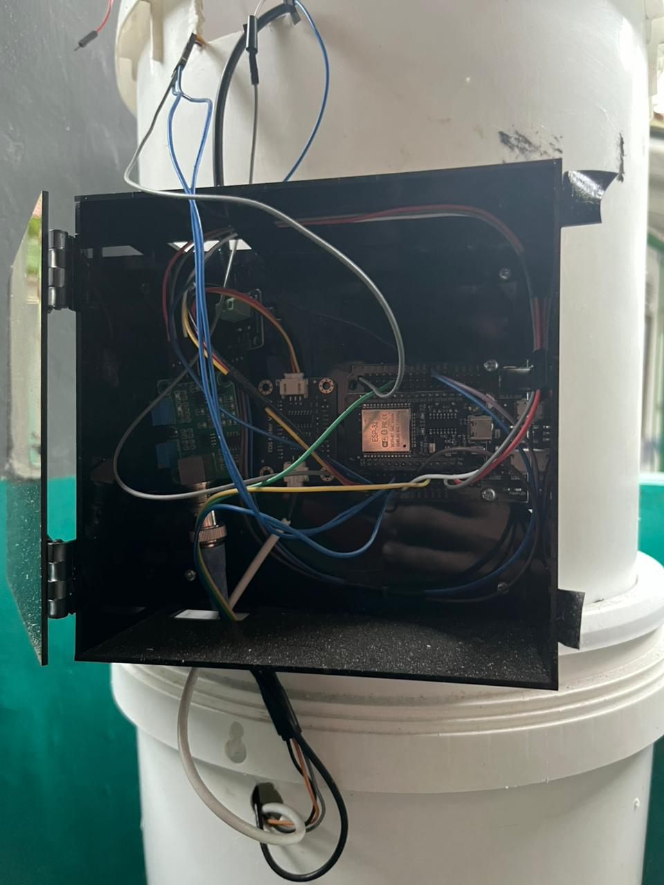

MY WORK
Featured Projects

IoT-Based Compost Monitoring System
IoT • Mobile Application • Machine Learning
An IoT-based monitoring system designed to monitor compost conditions using temperature, moisture, soil pH, water pH, TDS, and water-level sensors. The system integrates ESP32, MQTT, ThingSpeak, Firebase, Flutter, and KNN for real-time monitoring and compost maturity classification.
▶ Watch Project Video 1▶ Watch Project Video 2
▶ Watch Project Video 3

Telecommunication Network Analysis
Telecommunication • Network Analysis
Telecommunication engineering projects involving network planning, cellular network analysis, signal measurement, and network performance evaluation using various telecommunications tools and technologies.
▶ Watch Project Video 1
Network & IoT Engineering Projects
Networking • IoT • Embedded Systems
Academic projects involving computer networking, embedded systems, sensors, microcontrollers, and IoT communication technologies, developed through practical engineering activities.